Conceito:
É a união entre duas ou mais estruturas rígidas (ossos, cartilagem e dente) que pode ou não apresentar movimento.
O critério para esta divisão é a natureza do elemento que se interpõe às peças que se articulam.
Classificação:
Embora apresentem consideráveis variações entre elas, as articulações possuem certos aspectos estruturais e funcionais em comum que permitem classificá-las em três grandes grupos:
Fibrosas, cartilagíneas e sinoviais.
Alguns autores ainda classificam as articulações como verdadeiras e falsas.
Sendo as verdadeiras = Diartroses (com muito movimento) e Anfiartroses (com movimentos limitados);
E as falsas = Sinartroses (com pouca ou nenhuma mobilidade)
Articulações fibrosas (Sinartroses)
São as articulações nas quais o elemento que se interpõe às peças que se articulam é o tecido conjuntivo fibroso e a grande maioria delas se apresentam no crânio.
É evidente que a mobilidade nestas articulações é praticamente ausente, embora o tecido conjuntivo interposto confira certa elasticidade ao crânio.
Na maioria dos casos, o grau de movimento em uma articulação fibrosa depende do comprimento das fibras que unem os ossos.
Há três tipos de articulações fibrosas: Sindesmoses, gonfoses e suturas.
Sindesmoses
Possuem uma grande quantidade de tecido conjuntivo que pode formar ligamentos interósseo ou membrana interóssea. São as membranas interósseas presentes no:
Antebraço (membrana interóssea do antebraço ou sindesmose radioulnar) e;
Na perna (membrana interóssea da perna ou sindesmose tibiofibular).
A sindesmose dentoalveolar que se faz entre os dentes e os alvéolos dentários da maxila e mandíbula, é denominada gonfose.
Gonfoses
Articulações fibrosas entre os alvéolos dentais da maxila e mandíbula com os dentes.
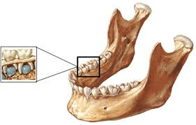
Suturas
Têm menos tecido conjuntivo do que as sindesmoses e são encontradas entre os ossos do crânio.
É evidente que a mobilidade nestas articulações é extremamente reduzida, embora o tecido conjuntivo interposto confira uma certa elasticidade ao crânio.
A maneira pela qual as bordas dos ossos articulados entram em contato é variável, reconhecendo-se:
Suturas planas = união linear retilínea ou aproximadamente retilínea, Ex: internasal e interpalatina;
Suturas escamosas = união em bisel (Corte enviesado na aresta de uma peça. O mesmo que chanfradura = marca na pele provocada por corte de faca ou de navalha; cicatriz), Ex: temporo-parietal;
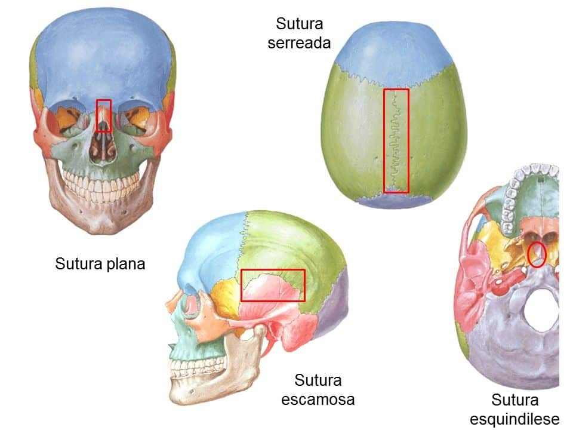
Sutura serreada ou serrátil = união em linha “denteada”, Ex: inter-parietal ;
Suturas esquindilese = também chamada de cunha ou sulco por assim se apresentarem às superfícies ósseas em forma de crista, Ex: esfenóide e vômer.
No crânio do feto e recém-nascido, onde a ossificação ainda é incompleta, a quantidade de tecido conjuntivo fibroso interposto é muito maior, explicando a grande separação entre os ossos e uma maior mobilidade. É isto que permite, no momento do parto, uma redução bastante apreciável do volume da cabeça fetal pelo “cavalgamento“, digamos assim, dos ossos do crânio.
Esta redução de volume facilita a expulsão do feto para o meio exterior.
Se observar atentamente um crânio de feto em vista superior, um outro fato pode ser notado: em alguns pontos a separação entre os ossos é maior pela presença de maior quantidade de tecido conjuntivo fibroso.
Estes são pontos fracos na estrutura do crânio, denominados fontanelas ou fontículos e vulgarmente chamados “moleiras“. Desaparecem quando se completa a ossificação dos ossos do crânio.


Com o passar do tempo, os ossos da cabeça vão crescendo até que se encostam e “colam” uns nos outros, fechando a fontanela quando a criança tem cerca de 1 ano e meio de idade.
Embora já tenha sido descrita anteriormente, seria interessante lembrar que na idade avançada pode ocorrer ossificação do tecido interposto (sinostose), fazendo com que as suturas, pouco a pouco, desapareçam e, com elas, a elasticidade do crânio.
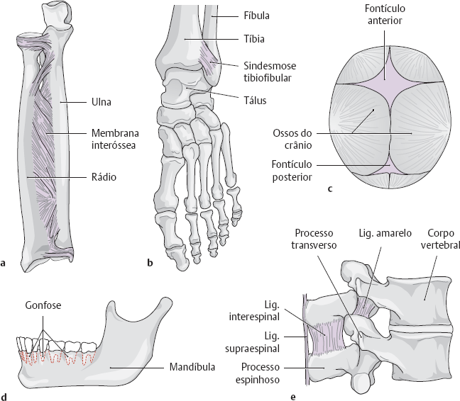
Alguns exemplos de Sindesmoses (articulações fibrosas).
a – Membrana interóssea.
b – Sindesmose tibiofibular.
c – Fontículos.
d – Gonfose.
e – Ligamentos amarelo, interespinal e supraespinal*** (Essa característica se dá pelo fato de não ter cartilagem ou sinóvia na região).
Sinostose
É um processo de ossificação da articulação. São ossos unidos por tecido ósseo. Ex., o sacro.
Em sentido estrito, este osso não apresenta mais articulações, uma vez que ele é imóvel.
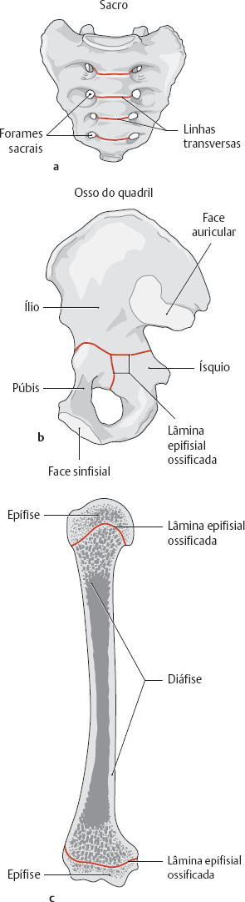
Alguns exemplos de Sinostoses (locais de fusão óssea).
a – Sacro (vértebras sacrais fundidas).
b – Osso do quadril (fusão de ílio, ísquio e púbis).
c – Lâminas epifisiais fechadas e ossificadas.
Articulações Cartilagíneas (Anfiartroses)
Neste grupo de articulações o tecido que se interpõe é uma cartilagem.
Tipos de articulações cartilagíneas: Sincondroses e sínfises.
Em ambas a mobilidade é reduzida.
Sincondroses
Ossos que possuem uma fina camada de cartilagem hialina ligando dois ossos.
Quando se trata de cartilagem hialina, temos as sincondroses, conhecidas também como articulações temporárias que desaparecem depois do crescimento.
Ex: articulação esfeno-occipital ou esfenobasilar, manubrioesternal e epífise ou placa de crescimento.
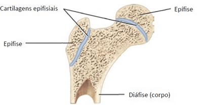
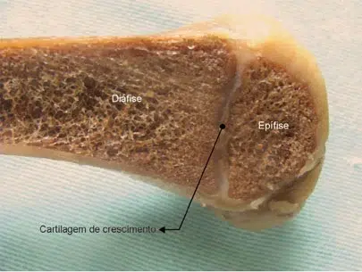
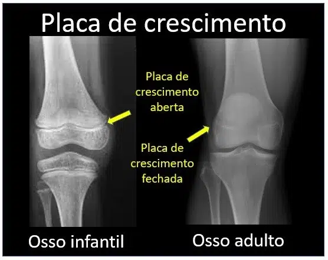
Sínfises
As articulações que contém fibrocartilagem são mais fortes e geralmente localizadas em locais de impacto, servem também como “amortecedores”; são as chamadas sínfises.
Exemplo de sínfise encontramos na união, no plano mediano, entre as porções púbicas dos ossos do quadril, constituindo a sínfise púbica.
Também as articulações que se fazem entre os corpos das vértebras podem ser consideradas como sínfise, uma vez que se interpõe entre eles um disco de fibrocartilagem — o disco intervertebral.
Existe uma fibrocartilagem espessa interposta;
SEQUÊNCIAS:
- Osso-cartilagem-osso;
- Osso-cartilagem-disco-cartilagem-osso.
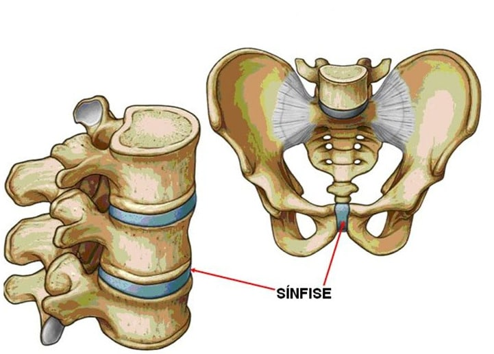
Exemplos de anfiartroses:
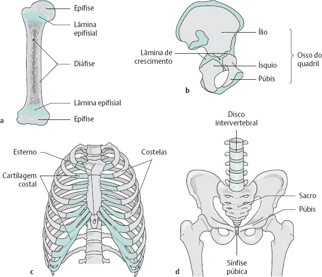
Alguns exemplos de Anfiartroses (articulações cartilagíneas).
a – Lâminas epifisiais antes do fechamento.
b – Osso do quadril antes do fechamento das lâminas epifisiais.
c – Cartilagem costal.
d – Sínfise púbica e discos intervertebrais (sínfise intervertebral).
Articulações sinoviais (Diartroses)
A mobilidade exige livre deslizamento de uma superfície óssea contra outra e isto é impossível quando entre elas interpõe-se um meio de ligação, seja conjuntivo fibroso ou cartilagíneo.
Para que haja o grau desejável de movimento, em muitas articulações, o elemento que se interpõe às peças que se articulam é um líquido denominado sinóvia, ou líquido sinovial.
Deste modo, os meios de união entre as peças esqueléticas articuladas não se prendem nas superfícies de articulação, como ocorre nas articulações fibrosas e cartilaginosas.
Nas articulações sinoviais o principal meio de união é representado pela cápsula articular, espécie de manguito que envolve a articulação prendendo-se nos ossos que se articulam.
O corte frontal abaixo (esquemático) de uma articulação sinovial mostra a presença de uma cavidade articular (um espaço onde se encontra a sinóvia, um lubrificante natural de articulação que permite o deslizamento com um mínimo de atrito e desgaste).
Além da cápsula articular, a cavidade articular e a sinóvia, as articulações sinoviais são acrescidas de um resistente sistema de:
- ligamentos, com tensões variáveis, de posições intra e extra-articular que estabilizam a articulação.
- Músculos em torno da articulação se movimentam em sentidos opostos (agonistas/antagonistas).
- Bolsas sinoviais ou Bursas frequentemente dispostas nas proximidades das articulações podem se comunicar com a cavidade articular. Servem para reduzir o atrito entre duas superfícies em movimento, tendão e osso por exemplo.
Algumas articulações contêm estruturas intra-articulares, que atuam como dispositivos auxiliares de grande importância. Elas aumentam, por exemplo, a distribuição das forças das superfícies em contato, reduzindo a incongruência entre as faces articulares e, consequentemente, a carga de pressão sobre a cartilagem articular.
Por definição, as estruturas intra-articulares se encontram na cavidade articular e são banhadas pela sinóvia, isto é, estão em contato direto com este líquido, por meio do qual também são nutridas (meniscos, discos e lábios articulares).
Componentes essenciais para uma articulação sinovial:
- Cápsula articular (formada pelas membranas fibrosa e sinovial);
- Cavidade articular;
- Cartilagem articular;
- Líquido sinovial.
A membrana sinovial é a mais interna das camadas da cápsula articular. É abundantemente vascularizada e inervada, sendo encarregada da produção da sinóvia (líquido sinovial).
A membrana sinovial pode se regenerar a partir do tecido conjuntivo vizinho até a idade avançada – mesmo após remoção mais completa (= sinovectomia; realizada, por exemplo, devido à inflamação crônica da articulação na doença reumática).
Observação: Enquanto a membrana sinovial é capaz de se regenerar a partir do tecido conjuntivo circunjacente, a cartilagem hialina articular (exceto no esqueleto primitivo) não apresenta tecido conjuntivo ao seu redor (pericôndrio) e, por isso, não tem capacidade de regeneração.
Componentes acessórios para uma articulação sinovial:
- Ligamentos;
- Discos articulares;
- Meniscos;
- Lábios articulares.
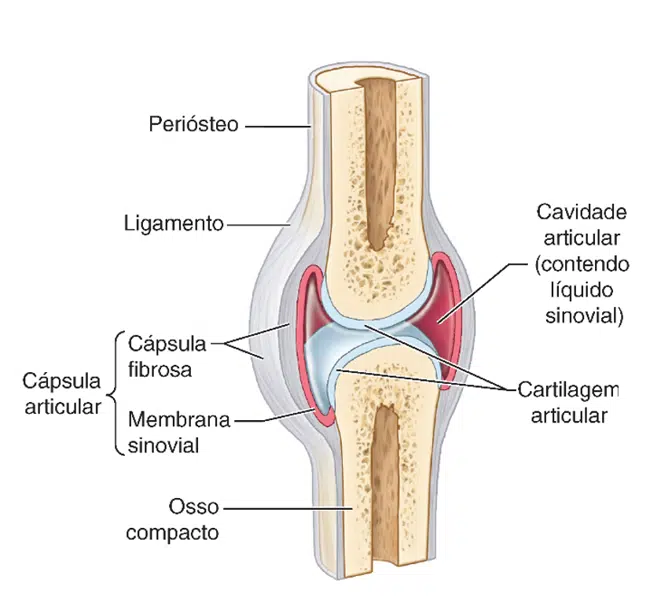
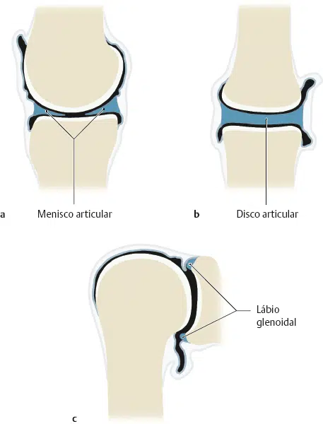
a – Os meniscos articulares são estruturas em formato de meia-lua e de formato cuneiforme em corte transversal e que normalmente são encontradas apenas na articulação do joelho. Enquanto suas porções periféricas, fundidas à cápsula articular, são nutridas por vasos sanguíneos derivados da cápsula, as porções mais internas, formadas por cartilagem fibrosa, são nutridas pela sinóvia.
b – Os discos articulares são estruturas em formato esférico, constituídas, em parte, por tecido conjuntivo e, em parte, por cartilagem fibrosa e que subdividem uma articulação em duas câmaras separadas. Normalmente, os discos articulares ocorrem nas articulações temporomandibular e esternoclavicular, assim como na articulação entre a ulna e o carpo.
c – Os lábios articulares são revestimentos externos esféricos sobre as margens do acetábulo e da cavidade glenoidal (lábio do acetábulo e lábio glenoidal, respectivamente). Eles são constituídos predominantemente por cartilagem fibrosa e estão fundidos em sua porção externa de tecido conjuntivo à cápsula articular. Graças aos lábios articulares, as faces articulares do ombro e do quadril são aumentadas.
Classificação funcional das articulações sinoviais
As articulações planas permitem movimentos de deslizamento no plano das faces articulares.
As superfícies opostas dos ossos são planas ou ligeiramente curvas, com movimento limitado por suas cápsulas articulares firmes.
As articulações planas são muitas e quase sempre pequenas.
Exemplo:
- Articulação acromioclavicular;
- Articulações entre os ossos do carpo ou tarso.
Quanto à movimentação, podem ser:
- Mono-axial;
- Bi-axial;
- Tri-axial.
MONO-AXIAL
- (um só grau de liberdade)
Realizam movimentos em torno de apenas um eixo.
Gínglimo ou art. em dobradiça
São articulações mantidas por fortes ligamentos colaterais.
Permitem apenas flexão e extensão.
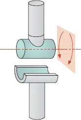
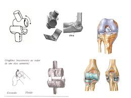
Trocoide ou art. em pivô
Permitem rotação em torno de um eixo central.
A articulação é formada por um processo em forma de pivô rodando dentro de um anel ou um anel sobre um pivô.
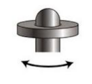
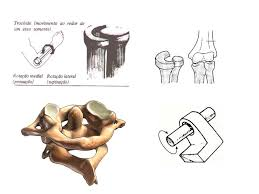
BI-AXIAL
- (dois graus de liberdade)
Realizam movimentos em torno de dois eixos.
Articulação Condilar / Elipsoidea
Possuem uma superfície articular ovoide ou condilar interligada a uma cavidade elíptica de modo a permitir os movimentos de flexão e extensão, adução e abdução.
Também é possível realizar circundução, mais restrita do que nas articulações selares.
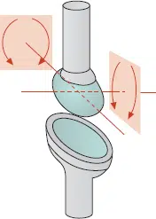
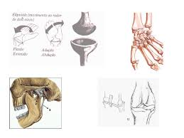
Articulação Selar
São articulações com faces ósseas côncavas ou convexas.
Permitem abdução e adução, além de flexão e extensão.
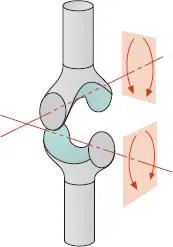
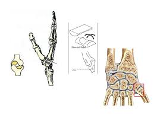
TRI-AXIAL
- (três graus de liberdade)
Realizam movimentos em torno de três eixos.
Articulação Esferóide
É um tipo de articulação na qual o osso distal é capaz de movimentar-se em 3 eixos ou 6 movimentos.
Flexão, extensão, abdução, adução, rotação e circundução.
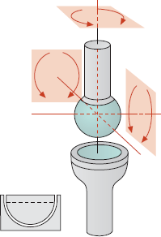
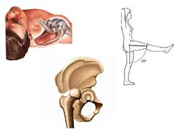
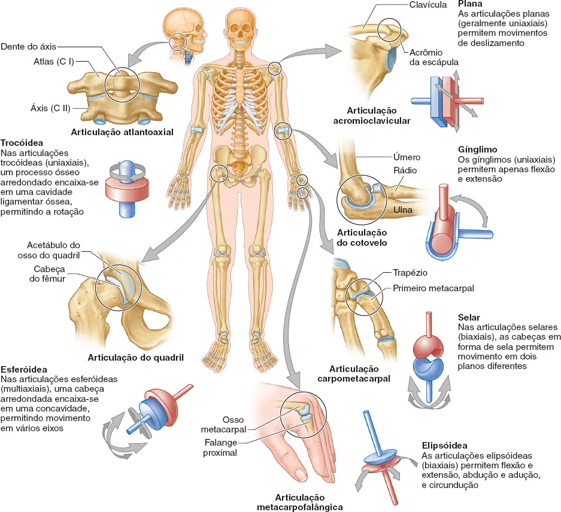
Considerações
A seguir, veremos alguns termos utilizados para variadas condições relacionadas às cartilagens:
Artrite = é a inflamação das articulações, podendo ter diversas causas, como infecções ou doenças autoimunes.
Artrose (ou osteoartrite) = é o desgaste progressivo da cartilagem articular, geralmente associado ao envelhecimento ou uso excessivo das articulações.
Pseudoartrose = Chamada “falsa articulação” (instabilidade com base na ausência de união entre ossos), formada após consolidação malsucedida de uma fratura.
Anquilose = Fusão patológica de uma articulação verdadeira.
Artrodese (na região da coluna vertebral, é chamada espondilodese) = Fusão cirúrgica intencional (de caráter terapêutico) de uma articulação por osteossíntese. –Principais indicações: artrite infecciosa, distúrbio articular pós-traumático (após lesões e infecções), doenças articulares degenerativas, além de instabilidade dependente de paralisia
Artrotomia = Remoção cirúrgica de uma articulação.
Artrografia = Estudo radiográfico da cavidade articular com o auxílio de um meio de contraste (este exame perdeu a importância com o avanço da RM).
Artroscopia = Avaliação endoscópica das articulações, geralmente associada à terapia endoscópica subsequente, por exemplo, reconstrução artroscópica de estruturas capsulares e ligamentares lesadas, remoção de corpos intra-articulares livres, tratamento de defeitos da cartilagem articular (ex: osteocondrose dissecante).
Sinovectomia = Remoção do conteúdo intra-articular (sinóvia), por exemplo, na poliartrite crônica.
Punção articular (injeção intra-articular) = Punção de líquidos (p. ex., em uma efusão ou derrame articular) e/ou introdução de substâncias (p. ex., medicamentos)
Prótese articular = Substituição cirúrgica da articulação por uma prótese total ou parcial devido a doença articular degenerativa avançada (artrose).